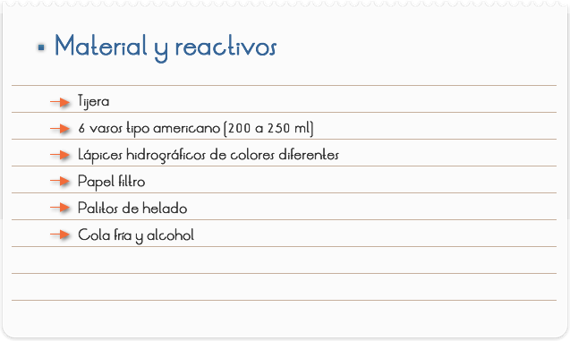
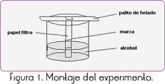

Introducción
La cromatografía en papel se basa en un proceso de división sucesiva de una especie entre dos fases no mezclables, siendo una móvil y la otra fija. La mezcla a ser fraccionada es retenida por las fibras de celulosa, junto con un solvente, generalmente, agua, la cual actúa como fase estacionaria. Haciéndolo pasar por el papel impregnado, un solvente apropiado (fase móvil) en sentido ascendente o descendente, el soluto será, poco a poco removido de la fase estacionaria, a través de los equilibrios de división que se establecen entre las dos partes.
La fracción más soluble en la fase móvil será dislocada mas fácilmente, separándose de las demás, menos solubles.
Por tratarse de una técnica muy simple es muy usada en laboratorios químicos y biológicos, donde la separación e identificación de las mezclas constituyen una actividad rutinaria.
Objetivo
Realizar la separación de algunos pigmentos que componen una determinada tintura.

1. Con una tijera, cortar tiras de papel filtro con, aproximadamente, 0,5 cm de largo y 11 cm de largo.
2. Pegar uno de los extremos de la tira de papel en un palito de helado, de modo que cada tira quede apenas un poco menor que la altura del vaso (Figura 1).

3. Efectuar una pequeña marca, aproximadamente a 5 cm. del otro extremo de cada tira, con el lápiz de color elegido.
4. Colocar en los 6 vasos americanos, pequeñas cantidades de alcohol y sumergir en cada vaso una tira de papel, de modo que el trazo no alcance el alcohol (figura 1).
5. Dejar en reposo, más o menos por una hora, observar y anotar lo que pasó.
Cuestionario
1. Defina cromatografía.
2. Retirar el palito de helado y pegar los cromatogramas (tiras de papel donde fue efectuada la cromatografía) en la hoja del informe.
3. ¿Qué es lo que se observa en relación a los puntos coloridos hechos en las tiras de papel de filtro?
4. ¿Cómo puede explicarse este resultado?
5. ¿Cuál es la función del alcohol en la cromatografía?
6. Con relación a las fajas coloridas, ¿cuáles son las diferencias observadas entre los colores oscuros y los claros?
7. ¿Qué es lo que hace que el pigmento se disloque con mayor rapidez?
8. Citar tipos de cromatografía empleados frecuentemente en la industria, laboratorios, etc.
RESULTADOS Y CONCLUSIONES
En el experimento realizado, al colocar el pedazo de papel en contacto con el alcohol (solvente), este se difundió por el filtro y pasó por el punto hecho en el lápiz, disolviendo los colores componentes de aquella tintura. Puede percibirse, de este modo, que para cada color se va formando, verticalmente y para arriba, una faja colorida. En general, para los colores oscuros, las fajas son más coloridas, pues son los colores secundarios (morado, negro, café) los que son hechos con mezclas que envuelven una mayor variedad de colores y pigmentos.
Cuanto mayor el número de colores a ser disueltos, mas colorida quedará la faja. Si sucede una pequeña variación de colores en las fajas con los colores claros o primarios, será debido a la incorporación de color negro en la tinta del lápiz hidrográfico con la finalidad de oscurecer el tono.
Debido a las diferencias entre las estructuras moleculares de cada color (o pigmento), estos son arrastrados con velocidades diferentes, pudiendo ser visualizados separadamente. La velocidad de disolución varía de acuerdo al color (o pigmento), cuanto mayor la solubilidad, más rápidamente el pigmento será dislocado